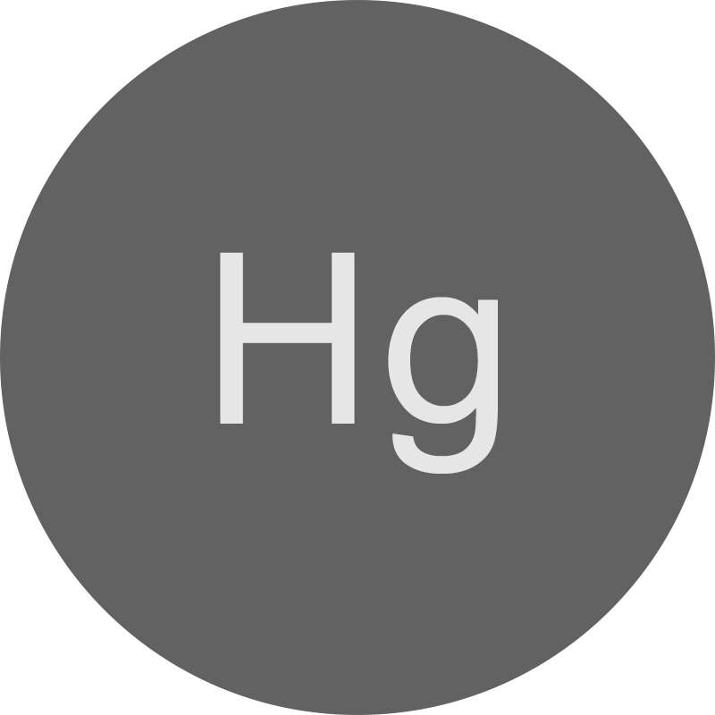

Ртуть
Hg
80
Ртуть
200.59
Отравления ртутью — расстройства здоровья, связанные с избыточным поступлением паров или соединений ртути в организм.
История ртути
Токсические свойства ртути известны с глубокой древности. Соединения ртути
— киноварь(HgS), каломель(Hg2Cl2)
и сулема(HgCl2) — применялись для разных целей,
в том числе и в качестве ядов. С древних времён известна также и металлическая ртуть,
хотя её токсичность поначалу сильно недооценивалась.
Ртуть и её соединения стали особенно широко применяться в средние века, в частности при
производстве золота и серебряных зеркал (в виде амальгам), а также при изготовлении фетра для
шляп, что вызвало поток новых, уже профессиональных отравлений. Хроническое отравление ртутью в то
время называли «болезнь старого шляпника». Использовалась ртуть и в антисептических целях, и даже
для умышленного отравления.
Источники загрязнения ртутью
Бытовые источники
- Ртутный термометр 2г
- Люминесцентные лампы ~10г
- Ртутный термометр
Медицинские источники
- Вакцины, содержащие консерванты
на основе тиомерсала - Зубные пломбы с амальгамой ~100г
Техногенные
- Ртутно-цинковые батареи/аккумуляторы
- Дагер(р)отипия
- Промышленные источники
- Процессы амальгамирования, золочения и др.
- Pазложение киновари
Пищевые
- Морепродукты
Отравление ртутью
Отравления парами
Симптомы
- Общая слабость
- Отсутствие аппетита
- Головная боль
- Боль при глотании
- Металлический вкус во рту
- Слюнотечение
- Набухание и кровоточивость десен
- тошнота
- Рвота 
- Сильные боли в животе
- Воспаление лёгких
- Кашель, одышка
- Озноб
Хронические отравления
Меркуриализм
Симптомы
- Утомляемость
- Сонливость
- Апатия
- Эмоциональная неустойчивость
- Застенчивость
- Раздражительность
- Снижение обоняния, вкуса
- Увеличение щитовидной железы
- Усиление потливости
- Снижение кровяного давления
- Нарушение ритма сердечной
деятельности
Микромеркуриализм
Неврологические заболевания
Последствия
- Нарушение функций ЦНС
- Нарушение обмена веществ
- Снижение умственной активности
- Судороги
- Смерть
Свинец
Pb
82
Свинец
207.2
Отравление свинцом — наиболее распространённый вид отравлений тяжёлыми металлами.
История свинца
Свинец используется многие тысячелетия, поскольку он широко распространён, легко добывается и обрабатывается. Свинцовый сахар ещё с римских времён добавляли в вино для улучшения его вкусовых качеств, это стало широко применяться. В Древней Руси свинец использовали для покрытия крыш церквей, а также широко применяли в качестве материала навесных печатей к грамотам. До 1990 года большое количество свинца использовалось (вместе с сурьмой и оловом) в типографии для отливки шрифтов. Это всё говорит о том, что сам по себе свинец занимал и занимает большую часть в жизни человека, но при попадании его в органзим возникают осложнения.
Источники загрязнения свинцом
Техногенные
- Добыча свинца
- Выплавка свинца
- Продукция с добавлением свинца
Бытовые источники
- Свинцовые трубы
- Контейнеры для еды с добавлением свинца
- Косметика
Промышленное производство
Отравление свинцом
Симптомы
У детей
- Раздражительность
- Потеря аппетита
- Потеря веса
- Вялость и усталость
- Боль в животе
- Рвота
У Взрослых
- Высокое кровяное давление
- Мышечная боль
- Головная боль
- Боль в животе
- Ухудшение эмоционального состояния
- Выкидыш, мертворождение или
преждевременные роды у беременных женщин
Последствия
У детей
- Отставание в развитии
- Проблемы в обучении
- Потеря слуха
У Взрослых
- Трудности с памятью или концентрацией
- Нарушения половой системы